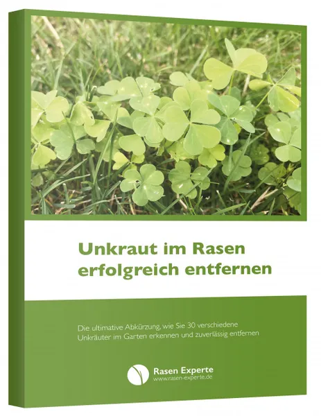

Unkraut im Rasen erfolgreich entfernen
Produktprofil · Marktplatz-Daten 2026-10-14 · Verkaufsseiten-Recherche 2026-10-14 · Kategorien: Home & Garden
- Unkraut im Rasen erfolgreich entfernen ist ein/e E-Book in Home & Garden, vertrieben über den Digistore24-Marktplatz von Anbieter RasenExperte, gelistet seit 2018-09-05.
- Listenpreis $13.49 (single payment) — Checkout, Auslieferung und Rückerstattungen laufen über Digistore24 selbst, nicht über den Anbieter.
- Käuferschutz: keine standardisierte Garantie-Formulierung gefunden — Rückerstattungsbedingungen vor der Zahlung auf der offiziellen Seite prüfen.
Interesse an Unkraut im Rasen erfolgreich entfernen? Aktueller Preis, Boni und Garantiebedingungen finden Sie auf der offiziellen Seite des Anbieters:
Offizielle Verkaufsseite ansehen
Affiliate-Link (Werbung) — wir verdienen ggf. eine Provision, ohne Mehrkosten für Sie.

Marktplatz-Daten
| Produkttyp | E-Book |
|---|---|
| Preis | $13.49 (Single payment) |
| Garantie/Rückgabe | Laut Verkaufsseite des Anbieters — vor dem Kauf auf der offiziellen Seite prüfen |
| Anbieter | RasenExperte (gelistet seit 2018-09-05) |
Marktplatz-Beschreibung des Anbieters
Bewerben Sie ein tolles eBook, in dem Ihre User lernen, wie man die 30 am weitesten verbreiteten Unkräuter im Rasen erfolgreich entfernen kann. Auf über 100 Seiten haben wir die wichtigsten Merkmale zum Identifizieren zusammengefasst und die individuell notwendigen Schritte für die langfristige Entfernung der Unkraut-Pflanzen aufgeschrieben. Jedes Unkraut wird mit Bild und Text vorgestellt. Die niedrige Stornoquote spricht für die gute Qualität des Produktes. Für jeden erfolgreichen Verkauf, erhalten Sie 30% des Netto-Verkaufspreises als Provision. Viel Erfolg bei der Bewerbung dieses wirklich tollen Produktes!
Von der Verkaufsseite des Anbieters
Seitentitel: Buch: Einfach unkrautfrei – 30 Unkräuter im Rasen entfernen
Meta-Beschreibung: Mein Buch „Einfach unkrautfrei“: 30 Unkräuter im Rasen erkennen und gezielt bekämpfen, auf über 110 Seiten. Als eBook oder Taschenbuch, über 2.000-mal verkauft.
Hauptüberschrift
Einfach unkrautfrei – 30 Unkräuter im Rasen erfolgreich entfernen
Abschnitts-Überschriften
- Was dich im Buch erwartet
- Warum ich dieses Buch geschrieben habe
- Diese 30 Unkräuter behandelt das Buch
- Bring deinen Rasen wieder in Form
Einstiegstext
Mein Buch · über 110 Seiten Einfach unkrautfrei – 30 Unkräuter im Rasen erfolgreich entfernen Dein Rasen sieht eher aus wie eine Wiese, und zwischen Klee, Löwenzahn und Moos findest du kaum noch einen Grashalm? In meinem Buch zeige ich dir, wie du 30 typische Rasenunkräuter erkennst, gezielt bekämpfst und dafür sorgst, dass sie nicht wiederkommen.
Taschenbuch bei Amazon Das eBook bekommst du über Digistore24 als Download, das Taschenbuch über Amazon.
Ich pflege meinen eigenen Rasen mit Leidenschaft. Das schönste Kompliment ist, wenn Besuch in den Garten kommt und als Erstes sagt: „Wie ein Teppich. Und kein einziges Unkraut.“ Das kommt nicht von allein. Ein Rasen ist kein Selbstläufer, er braucht Arbeit und vor allem Hartnäckigkeit.
Gegen Unkraut im Rasen gibt es kein einzelnes Wundermittel, denn jedes Unkraut hat andere Schwachstellen und andere Ursachen. Löwenzahn mit seiner Pfahlwurzel bekämpfst du anders als kriechenden Klee oder Moos im Schatten. Genau das habe ich in diesem Buch zusammengetragen: für jedes Unkraut, wie du es erkennst, was es über deinen Rasen verrät und wie du es loswirst.
CTA-Buttons: „Startseite"
Recherche-Methode: rohes HTML · 435 Wörter · Qualität: rich · recherchiert am 2026-10-14. Vollständige Recherche-Datei (MD) ↗
Wie Produkte dieser Art geliefert werden
Allgemeiner Hinweis zu diesem Produkttyp (keine anbieterspezifische Anleitung): E-Books auf Digistore24 werden als digitaler Download geliefert (meist PDF/EPUB): direkt nach dem Checkout erhalten Sie einen Downloadlink oder Mitgliederzugang und können auf jedem Gerät lesen. Für die genaue Anwendung von Unkraut im Rasen erfolgreich entfernen sind die offizielle Verkaufsseite und die enthaltenen Materialien maßgeblich.
Gut zu wissen
- Keine Garantie-Formulierung in unserer Recherche gefunden — bestätigen Sie das Rückgabefenster auf der offiziellen Seite, bevor Sie kaufen.
Was ist Unkraut im Rasen erfolgreich entfernen?
Unkraut im Rasen erfolgreich entfernen ist ein/e e-book in der Kategorie Haus & Garten des Digistore24-Marktplatzes, veröffentlicht von Anbieter RasenExperte und im Verkauf seit 2018-09-05. Der Anbieter beschreibt es so: "Bewerben Sie ein tolles eBook, in dem Ihre User lernen, wie man die 30 am weitesten verbreiteten Unkräuter im Rasen erfolgreich entfernen kann. Auf über 100 Seiten haben wir die wichtigsten Merkmale zum Identifizieren zusammengefasst und die individuell notwen" (Marktplatz-Beschreibung des Anbieters, leicht gekürzt).
Unkraut im Rasen erfolgreich entfernen Preis: was Sie zahlen
Der Marktplatz listet Unkraut im Rasen erfolgreich entfernen zum $13.49 Preis (single payment). Digistore24 fügt im Checkout die gesetzliche Steuer Ihres Landes hinzu — dort sehen Sie den Endbetrag vor der Zahlung. Eine separate Plattformgebühr gibt es nicht; Anbieter können eigene Upsells nach dem Checkout anbieten.
Unkraut im Rasen erfolgreich entfernen Rückerstattung und Geld-zurück-Garantie
Wir haben keine standardisierte Garantie-Formulierung auf der Verkaufsseite gefunden. Rückerstattungen für Digistore24-Käufe laufen über die Plattform: Antrag über den Support-Link in Ihrer Bestell-E-Mail, innerhalb des Garantiezeitfensters, das im Checkout angezeigt wird. Praktischer Rat: Entscheiden Sie innerhalb des Fensters — wenn das Produkt unter den Erwartungen bleibt, erstatten lassen statt irren lassen.
Mechanik im Detail: So funktionieren Digistore24-Rückerstattungen.
Für wen ist Unkraut im Rasen erfolgreich entfernen geeignet?
Basierend auf der Haus & Garten-Einordnung und der single payment-Abrechnung richtet sich Unkraut im Rasen erfolgreich entfernen an Käufer, die haus & garten-Lösungen suchen zum Einstiegspreis. Der ehrliche Test ist nicht die Kategorie, sondern Ihre eigene Situation: Werden Sie es realistisch innerhalb des Garantiefensters nutzen? Wenn ja, ist der Preis eine Investition; wenn nein, ist er Ballast — unabhängig von der Qualität.
Ist Unkraut im Rasen erfolgreich entfernen seriös? Was Sie vor dem Kauf prüfen
Wir bewerten keine Seriosität — das kann niemand, ohne das Produkt zu nutzen. Prüfbare Punkte, alle auf dieser Seite: die Marktplatz-Historie des Anbieters (im Verkauf seit 2018-09-05), die wörtlichen Verkaufsseiten-Auszüge unten (gekennzeichnet als Anbieteraussagen — deren Werbung, nicht unsere Empfehlung), die Garantiebedingungen im Checkout und die Auslieferungsart. Vorsichtsignale bei jedem Angebot: Countdown-Dringlichkeit gepaart mit vagen Rückerstattungsbedingungen, Testimonials ohne Datum und Anbieterseiten, die den Preis bis zum Checkout verstecken.
Wie kommen Sie nach dem Kauf an Unkraut im Rasen erfolgreich entfernen?
Der Checkout läuft über Digistore24. Nach der Zahlung: E-Books auf Digistore24 werden als digitaler Download geliefert (meist PDF/EPUB): direkt nach dem Checkout erhalten Sie einen Downloadlink oder Mitgliederzugang und können auf jedem Gerät lesen. Bewahren Sie die Bestell-E-Mail auf — sie ist Ihr Schlüssel zum/d zur e-book, zu Rückerstattungsanträgen und zum Digistore24-Käufersupport.
Unkraut im Rasen erfolgreich entfernen Erfahrungen: so recherchieren Sie richtig
Die meisten „Erfahrungsberichte" zu Marktplatz-Produkten sind Affiliate-Inhalte — einschließlich Seiten wie dieser, die an Käufen mitverdienen. Behandeln Sie jeden Bericht (auch unseren) als Ausgangspunkt und prüfen Sie gegen Primärquellen: die Verkaufsseite des Anbieters, die Digistore24-Rückerstattungsrichtlinie und — für haus & garten — unabhängige Communities außerhalb des Affiliate-Ökosystems. Auf dieser Seite sind die Verkaufsseiten-Auszüge unten wörtlich zitiert, damit Sie die Aussagen des Anbieters bewerten können, ohne wegzuklicken.
Wie Sie Unkraut im Rasen erfolgreich entfernen sicher kaufen
- Öffnen Sie die offizielle Verkaufsseite und lesen Sie das vollständige Angebot.
- Bestätigen Sie Endpreis und Garantiezeitfenster auf der Digistore24-Kassenseite — sie ist bindend, kein Vergleichsportal.
- Zahlen Sie innerhalb des Digistore24-Checkouts (niemals per Überweisung oder Off-Platform-Links).
- Speichern Sie die Bestellbestätigung; notieren Sie die Rückerstattungsfrist im Kalender.
- Prüfen Sie zügig. Der Digistore24-Käufersupport hilft, wenn der Anbieter nicht reagiert.
Vollständiges Recherche-Archiv für dieses Produkt (Markdown: kompletter Marktplatz-Datensatz + wörtliche Verkaufsseiten-Auszüge): Unkraut im Rasen erfolgreich entfernen — Datenarchiv (.md).
- Listenpreis & Abrechnung — Quelle: offizielle Digistore24-Marktplatz-API, Stand 2026-10-14. Maßgeblich für den aktuellen Preis ist immer die Kassenseite.
- Verkaufsseiten-Zitate — Quelle: https://www.rasen-experte.de/ebook-einfach-unkrautfrei-unkraut-im-rasen-erfolgreich-entfernen/, abgerufen 2026-10-14 (Methode: rohes HTML). Verify: offizielle Seite öffnen.
- Garantie / Rückgabe — vom Anbieter festgelegt; vor dem Kauf auf der Verkaufsseite bestätigen.
- Nicht von uns geprüft: Produktqualität, Ergebnisse, Testimonials — kein Praxistest für dieses Listing durchgeführt.
Häufige Fragen zu Unkraut im Rasen erfolgreich entfernen
Antworten aus dem Marktplatz-Snapshot (2026-10-14) und der Verkaufsseiten-Recherche (2026-10-14); Anbieteraussagen sind inline gekennzeichnet.
Was ist Unkraut im Rasen erfolgreich entfernen?
Unkraut im Rasen erfolgreich entfernen ist ein Angebot des Typs „E-Book" im Digistore24-Marktplatz, Anbieter: RasenExperte, gelistet seit 2018-09-05. Eingepflegt unter Haus & Garten. Digistore24 wickelt Checkout, Lieferung und Rückgaben ab.
Wie viel kostet Unkraut im Rasen erfolgreich entfernen?
Der Digistore24-Marktplatz listet es für $13.49 (single payment). Preise legt der Anbieter fest und können sich ändern — der Marktplatz-Eintrag oben zeigt den Schnappschuss; die offizielle Verkaufsseite zeigt den aktuellen Preis.
Gibt es eine Geld-zurück-Garantie für Unkraut im Rasen erfolgreich entfernen?
Unsere Verkaufsseiten-Recherche hat keine explizite Garantie-Formulierung gefunden. Viele Digistore24-Produkte bieten 60 Tage Geld-zurück, aber das legt jeder Anbieter selbst fest — bestätigen Sie es auf der offiziellen Verkaufsseite, bevor Sie kaufen.
Ist Unkraut im Rasen erfolgreich entfernen seriös?
Wir bewerten keine Seriosität — wir veröffentlichen überprüfbare Zahlen: Anbieter RasenExperte (gelistet seit 2018-09-05), mit der vollständigen Verkaufsseiten-Recherche archiviert auf dieser Seite (Anbieteraussagen als solche gekennzeichnet). Lesen Sie unsere 6-Punkte-Bewertungsmethode und entscheiden Sie anhand der Zahlen — oder diskutieren Sie Unkraut im Rasen erfolgreich entfernen auf GitHub.
Wo kann ich Unkraut im Rasen erfolgreich entfernen sicher kaufen?
Nur über die offizielle Verkaufsseite, die auf dieser Seite verlinkt ist (Checkout und Rückgaben laufen über Digistore24). Prüfen Sie dort Preis und Garantie vor der Bestellung. Der Link ist ein Affiliate-Link — der Kauf unterstützt diese Website ohne Mehrkosten für Sie.
Wie erhalte ich Unkraut im Rasen erfolgreich entfernen nach der Zahlung?
Der Checkout läuft über Digistore24: Nach der Zahlung erhalten Sie Ihren Zugang oder Download per E-Mail und in Ihrem Digistore24-Kundenkonto. Lieferdetails für diesen Produkttyp: E-Books auf Digistore24 werden als digitaler Download geliefert (meist PDF/EPUB): direkt nach dem Checkout erhalten Sie einen Downloadlink oder Mitgliederzugang und können auf jedem Gerät lesen. Bei Problemen kann der Digistore24-Käufersupport Ihre Bestellung wiederherstellen.
Alle 50 Käuferfragen zu Haus & Garten — das komplette Kategorie-FAQ.
Unkraut im Rasen erfolgreich entfernen auf Reddit diskutieren
In Community-Threads vergleichen echte Käufer Erfahrungen. Wir verlinken Communities, keine einzelnen Posts — Threads verschwinden, Subreddits bleiben:
- Reddit-Suche nach „Unkraut im Rasen erfolgreich entfernen" — Live-Ergebnisse, von uns nicht beeinflusst.
- Top-„Erfahrungs"-Treffer dieses Jahr — selbst nach Aktualität filtern.
Passendes auf Amazon.de
Physische Produkte und Zubehör, die häufig zusammen mit Unkraut im Rasen erfolgreich entfernen gekauft werden:
- Gartenwerkzeug auf Amazon.de — Top-Ergebnisse, Amazon-Ranking.
- Bestseller: Gartenwerkzeug — live Liste von Amazon, von uns nicht kuratiert.
Werbung: Als Amazon-Partner verdient DigistorePicks DE an qualifizierten Käufen (Partner-tag adminstorede-21). Amazon setzt eigene Preise und Provisionen (niedrige einstellige Prozente — weit unter den 30–75% der Digistore24-Anbieter). Amazon ist ein Convenience-Angebot für Sachprodukte, kein Ersatz für das digitale Produkt oben.
Ähnliche Angebote in Haus & Garten

Ideales Partnerprogramm für JEDEN aus der Immobilienbranche. Erhalte 20% Provision beim Verkauf von Home Staging Online Kursen. Die Staging Akademie ist Deutsch
Verdien 190 Euro netto pro Sale in der unentdecktesten Nische des Jahres! Bist du genervt von den ewig gleichen Geld-verdienen-Produkten wie Dropshipping, Krypt

MIETfrei – löst großes gesellschaftliches Problem vieler Menschen in Deutschland Wohnraum finden trotz extrem angespanntem Wohnungsmarkt für einen günstigen Pre

Feng Shui Online-Kurs Entspannt wohnen – entspannt sein Feng Shui, das Jahrtausende erprobte Wissen kann – richtig angewendet – vielleicht auch Deine Lebensqual
Ähnliche Preislage in Haus & Garten
Dach, Fenster, Fassade, Heizung oder Photovoltaik: Viele Hauseigentümer wissen, was erneuert werden soll, aber nicht, welche Reihenfolge sinnvoll ist. „Erst pla

Hallo Lieber Affiliate Wenn du mein Buch bewirbst, darfst du dich auf 70% Provision pro verkauftem Buch (Taschenbuch) freuen :-) ...und dann 50% an den Folgever

84 Seiten voller Wildbienenwissen, Ausmalspaß und Naturentdeckungen! „Wildbienen – Mitmach- & Ausmalbuch“ ist ein digitales PDF-E-Book für Familien, naturin

Profitieren Sie von einem attraktiven DIY-Thema für Familien und Heimwerker! Bewerben Sie unsere vielfältige Auswahl an professionellen Bauplänen für Spieltürme
Ähnliche Suchanfragen
Wo Sie es sich ansehen können
Wo Sie es sich ansehen können
Aktuelle Preise, Garantie und Boni finden Sie auf der offiziellen Verkaufsseite:
Offizielle Verkaufsseite ansehen
Das ist ein Affiliate-Link (Werbung) — kaufen Sie darüber, verdienen wir ggf. eine Provision, ohne Mehrkosten für Sie.
Quellen & weiterführende Informationen
- Offizielle Verkaufsseite (aktueller Preis, Garantie, Boni): www.rasen-experte.de/ebook-einfach-unkrautfrei-unkraut-im-ra (Affiliate-Link)
- Öffentliche Digistore24-Produktseite: checkout-ds24.com/product/238872
- Vollständige Recherche-Datei (Markdown, versioniert): content/products/28036-unkraut-im-rasen-erfolgreich-entfernen.md
- Marktplatz-Kategorie: Haus & Garten
Wie wir Produkte wie Unkraut im Rasen erfolgreich entfernen bewerten
Sechs Prüfungen, ausschließlich mit offiziellen Marktplatz-Zahlen. Die vollständige Bewertungsmethode lesen · unsere Recherche-Standards & Kennzeichnung.
Fragen oder eigene Erfahrungen mit Unkraut im Rasen erfolgreich entfernen?
Praxis-Tests veröffentlichen wir erst, nachdem wir ein Produkt selbst gekauft haben — aber Ihre Erfahrung hilft anderen Lesern: Diskussion zu Unkraut im Rasen erfolgreich entfernen auf GitHub starten/verfolgen. Falsche Zahl gefunden? Korrektur melden — jede Seite zeigt ihre Datenstände, Korrekturen gelten für die ganze Website.